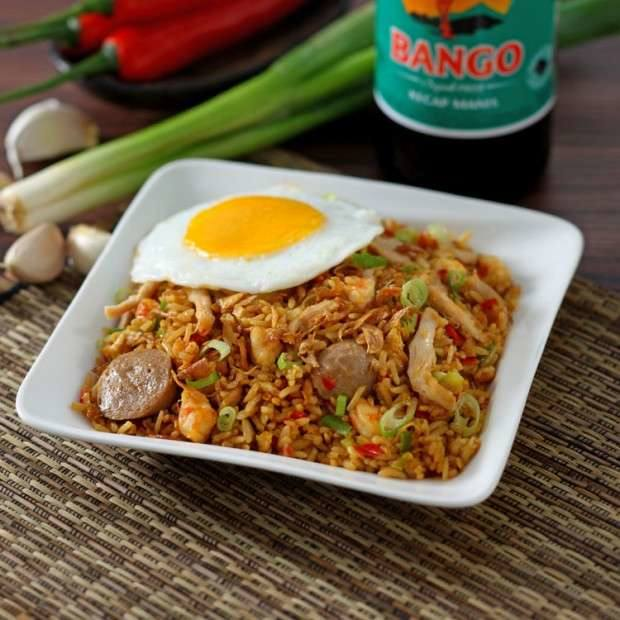

Nasi goreng merupakan hidangan favorit bagi hampir semua orang di Indonesia. Bukan hanya karena rasanya yang lezat, proses memasaknya yang mudah dan cepat membuat nasi goreng kerap jadi menu andalan untuk dihidangkan saat sarapan.
Biasanya, nasi goreng disajikan dengan pelengkap untuk menambah kenikmatannya. Pelengkapnya sangat bervariasi, mulai dari irisan tomat dan mentimun, acar, kerupuk, hingga telur dadar.
Lauk untuk disantap bersama nasi goreng pun beraneka ragam. Ada yang menyantapnya dengan ayam goreng, aneka seafood, sate ayam, chicken nugget, dan sebagainya. Setiap orang dapat menyesuaikannya dengan selera masing-masing.Tak hanya di Indonesia, nasi goreng kini juga eksis di kancah dunia, khususnya Asia. Menu tersebut dapat ditemui di Singapura, Malaysia, hingga Thailand, meski ada sedikit modifikasi untuk menyesuaikan selera warga setempat. Sebelum dikenal sebagai kuliner Nusantara, nasi goreng rupanya merupakan makanan dari Tiongkok. Ingin tahu kisahnya? Berikut sejarah nasi goreng yang menarik untuk disimak.
Sejarah nasi goreng bermula dari kebiasaan masyarakat Tionghoa yang tidak suka menyantap makanan dingin. Karena tidak boleh membuang sisa makanan, nasi yang sudah dingin digoreng lagi dengan tambahan bahan dan bumbu untuk dihidangkan kembali di meja makan. Di China, nasi goreng lebih dikenal sebagai hanzi. Mengutip buku Hidangan Lezat: Aneka Nasi Goreng oleh Tim Dapur Esensi, sejarah mencatat bahwa salah satu menu tradisional Tionghoa ini sudah ada sejak tahun 4000 SM silam. Nasi goreng lalu tersebar ke wilayah Asia Tenggara, dibawa oleh perantau-perantau Tionghoa yang menetap di sana. Mereka kemudian menciptakan nasi goreng khas lokal dengan bumbu dan cara menggoreng yang berbeda. Dijelaskan dalam buku 100 Resep Nasi Goreng oleh Dapur Alma, nasi goreng khas China berbumbu dasar bawang putih. Teknik membuatnya menggunakan wajan cekung (wok) yang merupakan piranti masak dapur China.